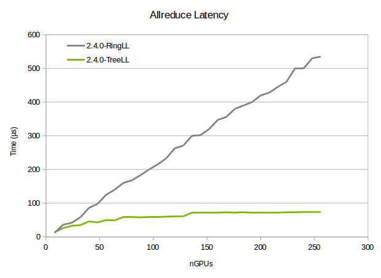
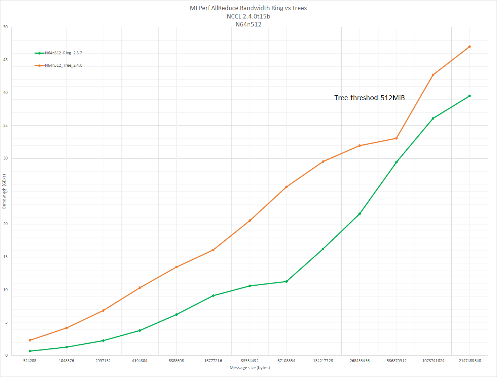

We implement binary trees instead of rings to achieve log latency. Binary trees have half bandwidth, meaning they can only achieve half of the peak bandwidth.
On PCI architectures, trees cannot achieve full bandwidth since the PCI bus is used both for receiving data from the internal ring and for receiving data from the network.
On NVLink architectures, since internal communication uses NVLink, we can get full bandwidth. We therefore use double binary trees in that case.
Double binary trees are a technique combining two binary trees, where the leaves of one tree is the nodes of the other and vice-versa.
Below is an illustration with 12/13 ranks, from the source code.
Build a double binary tree. Take the previous tree for the first tree.
For the second tree, we use a mirror tree (if nranks is odd)
8---------0---------5
______/ \______ _____/ \______
4 12 1 9
/ \ / \ / \
2 6 10 3 7 10
/ \ / \ / \ / \ / \ / \
1 3 5 7 9 11 2 4 6 8 11 12
or shift it by one rank (if nranks is even)
8---------0--------------9
______/ \ ______/ \
4 \ 5 \
/ \ \ / \ \
2 6 10 3 7 11
/ \ / \ / \ / \ / \ / \
1 3 5 7 9 11 2 4 6 8 10 1
We reuse the ring creation system to benefit from the topology detection. During the network ring creation phase, we store the GPUs where data enters the node. Those GPUs are supposed to be close to NICs.
We designate those GPUs as performing the tree inter-node reduction.
Other GPUs still form a chain inside the node, to continue to use NVLinks and get full bandwidth inside the node. The intra-node chain is following the rings as well, and connects to the network-head GPU.
If we consider the global (intra+inter node) tree, it is in fact a ternary tree since network-head ranks may receive from up to 2 ranks from the network, plus one rank from the node. PCI configuration are therefore limited to 2/3 of the peak bandwidth, while NVLink systems can get full bandwidth since the intra-node data flow (using NVLink) is independent from the inter-node flow (using PCI).
Contrary to rings which always flow in the same direction, trees use the same structure both for reductions (going up the tree) and broadcasts (going down the tree). That means we connect ranks in both directions and the same GPU communicates with the network card in both directions.
In the special case of two nodes with NVLink, using trees can actually outperform rings by a factor two.
An allreduce operations on G GPUs consists in 2×(G-1) operations, which also means 2×(G-1) transfers between GPUs. Rings balance those operations evenly on the links, so that 2×1/G of the data will not be transfered between GPU A and GPU (A+1)%G. Therefore, all links see 2×(G-1)/G of the total data.
With a tree featuring 2 nodes, and because we build them along then node topology, data is balanced unevenly, using intra-node more and inter-node less. All intra-node links see 2 time the total data instead of 2×(G-1)/G, while data transfered between the nodes is only 1 (in one direction) and 1 (in the other direction).
On NVLink systems where intra-node speed is faster than inter-node speed, we can easily absorb the extra 1/G of data. We currently see 60 GB/s instead of 40 GB/s on two DGX1, which we assume is due to some other bottleneck (we should be able to achieve 80 GB/s).
On PCI systems, the same technique would decrease the bandwidth by 1/G since PCI would be the bottleneck, on top of being used both for intra- and inter- node communication. It could be useful however for slow network, although only interesting with 2 nodes.
Because we send and receive from the same GPU, GPU Direct RDMA can only achieve 10.8 GB/s in both directions (compared to 11.8 GB/s when sending/receiving from different GPUs). Therefore, trees are slightly slower than rings for large enough sizes. On a DGX-1, we see a maximum speed of 42 GB/s for trees versus 47 GB/s for rings.
Additionally, as we scale to larger number of nodes and use top-of-rack Infiniband switches, performance drops further with trees. This is likely because trees feature more flows between leaf switches (up to 6 flows instead of 2 per NIC) which can cause static routing aliasing on Infiniband, i.e. having two of those 4x6 flows being routed on the same link.
Finally, our work on trees has revealed that we could achieve 47GB/s on rings, compared to 42GB/s on previous versions.
For all these reasons, we switch back to rings for large enough sizes.
Kernels have been rewritten to permit arbitrary numbers of sources and destinations. Rings only use one source and one destination. The code is specifically optimized for that case where no loop should happen and the 0-or-1 cases should be unrolled.
LL and non-LL primitives have been merged as much as possible (although they are still different classes) and now manage all head/tail index management.
Each peer has now independent head/tail indexes which are no longer reset to 0 at the end of a collective but continuously get incremented.
Collective operations can therefore only call send() or recv() which simplifies greatly the collective code.
Since communication with each peer is now independent, connections can be established at any time and the communicator has a full array of peer connections, although most of them are not established unless needed.
Binary trees need to receive from two sources and send to two destinations. The former design caused a significant increase in CPU usage since it meant multiplying the number of proxies. All network proxies have therefore been merged and a single proxy thread performs all network communication for a given rank/communicator.
Because of that, network calls have to be non-blocking to permit fluid progression of all communication with different peers. It also improves overall performance since there is no noise due to thread scheduling.
Latency is now increasing as a log of the number of nodes.

Bandwidth is much higher for small-medium sizes, especially for large number of GPUs.

Author : Sylvain Jeaugey